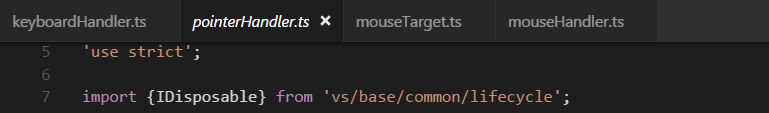

At its heart, Visual Studio Code is a code editor. Like many other code editors, VS Code adopts a common user interface and layout of an explorer on the left, showing all of the files and folders you have access to, and an editor on the right, showing the content of the files you have opened.
Files, Folders & Projects
VS Code is file and folder based - you can get started immediately by opening a file or folder in VS Code.
On top of this, VS Code can read and take advantage of a variety of project files defined by different frameworks and platforms. For example, if the folder you opened in VS Code contains one or more package.json, project.json, tsconfig.json, or .NET Core Visual Studio solution and project files, VS Code will read these files and use them to provide additional functionality, such as rich IntelliSense in the editor.
Basic Layout
VS Code comes with a simple and intuitive layout that maximizes the space provided for the editor while leaving ample room to browse and access the full context of your folder or project. The UI is divided into five areas:
- Editor The main area to edit your files. You can open up to three editors side by side.
- Side Bar Contains different views like the Explorer to assist you while working on your project.
- Status Bar Information about the opened project and the files you edit.
- Activity Bar Located on the far left-hand side, this lets you switch between views and gives you additional context-specific indicators, like the number of outgoing changes when Git is enabled.
- Panels You can display different panels below the editor region for output or debug information, errors and warnings, or an integrated terminal.
Each time you start VS Code, it opens up in the same state it was in when you last closed it. The folder, layout, and opened files are preserved.

Open files in each editor are displayed with tabbed headers (Tabs) at the top of the editor region. To learn more about tabbed headers, see the Tabs section below.
Tip: You can move the Side Bar to the right hand side (View > Move Sidebar) or toggle its visibility (⌘B (Windows, Linux Ctrl+B)).
Side by Side Editing
You can have up to three editors open side by side. If you already have one editor open, there are multiple ways of opening another editor to the side of the existing one:
- Ctrl (Mac: Cmd) click on a file in the Explorer.
- ⌘\ (Windows, Linux Ctrl+\) to split the active editor into two.
- Open to the Side from the Explorer context menu on a file.
- Click the Split Editor button in the upper right of an editor.
- Drag and drop a file to the either side of the editor region.
- Ctrl+Enter (Mac: Cmd+Enter) in the Quick Open (⌘P (Windows, Linux Ctrl+P)) file list.

Whenever you open another file, the editor that is active will display the content of that file. So if you have two editors side by side and you want to open file ‘foo.cs’ into the right hand editor, make sure that editor is active (by clicking inside it) before opening file ‘foo.cs’.
When you have more than one editor open you can switch between them quickly by holding the Ctrl (Mac: 'Cmd') key and pressing 1, 2, or 3.
Tip: You can resize editors and reorder them. Drag and drop the editor title area to reposition or resize the editor.
Explorer
The Explorer is used to browse, open, and manage all of the files and folders in your project.
After opening a folder in VS Code, the contents of the folder are shown in the Explorer. You can do many things from here:
- Create, delete, and rename files and folders.
- Move files and folders with drag and drop.
- Use the context menu to explore all options.
Tip: You can drag and drop files into the Explorer from outside VS Code to copy them.

VS Code works very well with other tools that you might use, especially command-line tools. If you want to run a command-line tool in the context of the folder you currently have open in VS Code, right-click the folder and select Open in Command Prompt (or Open in Terminal on Mac or Linux).
You can also navigate to the location of a file or folder in the native Explorer by right-clicking on a file or folder and selecting Reveal in Explorer (or Reveal in Finder on the Mac or Open Containing Folder on Linux).
Tip: Type ⌘P (Windows, Linux Ctrl+P) (Quick Open) to quickly search and open a file by its name.
By default, VS Code excludes some folders from the Explorer (for example. .git). Use the files.exclude setting to configure rules for hiding files and folders from the Explorer.
Tip: This is really useful to hide derived resources files, like \*.meta in Unity, or \*.js in a TypeScript project. For Unity to exclude the \*.cs.meta files, the pattern to choose would be: "**/*.cs.meta": true. For TypeScript, you can exclude generated JavaScript for TypeScript files with: "**/*.js": {"when": "$(basename).ts"}.
Open Editors
At the top of the Explorer is a section labeled OPEN EDITORS. This is a list of active files or previews. These are files you previously opened in VS Code that you’re working on. For example, a file will be listed in the OPEN EDITORS section if you:
- Make a change to a file.
- Double-click a file’s header.
- Double-click a file in the Explorer.
- Open a file that is not part of the current folder.
Just click an item in the OPEN EDITORS section, and it becomes active in VS Code.
Once you are done with your task, you can remove files individually from the OPEN EDITORS section, or you can remove all files by using the View: Close All Editors or View: Close All Editors in Group actions.
Views and the Activity Bar
The File Explorer is just one of the Views available in VS Code. There are also Views for:
- Search - Provides global search and replace across your open folder.
- Source Control - VS Code includes Git source control by default.
- Debug - VS Code’s Debug View displays variables, call stacks, and breakpoints.
- Extensions - Install and manage your extensions within VS Code.
The Activity Bar on the left lets you quickly switch between Views. You can also reorder Views by dragging and dropping them on the Activity Bar or remove a View entirely (right click Remove from Activity Bar).

Command Palette
VS Code is equally accessible from the keyboard. The most important key combination to know is ⇧⌘P (Windows, Linux Ctrl+Shift+P), which brings up the Command Palette. From here, you have access to all of the functionality of VS Code, including keyboard shortcuts for the most common operations.

The Command Palette provides access to many commands. You can execute editor commands, open files, search for symbols, and see a quick outline of a file, all using the same interactive window. Here are a few tips:
- ⌘P (Windows, Linux Ctrl+P) will let you navigate to any file or symbol by simply typing its name
- ⌃⇧Tab (Windows, Linux Ctrl+Shift+Tab) will cycle you through the last set of files opened
- ⇧⌘P (Windows, Linux Ctrl+Shift+P) will bring you directly to the editor commands
- ⇧⌘O (Windows, Linux Ctrl+Shift+O) will let you navigate to a specific symbol in a file
- ⌃G (Windows, Linux Ctrl+G) will let you navigate to a specific line in a file
Type ? into the input field to get a list of available commands you can execute from here:
Configuring the Editor
VS Code gives you many options to configure the editor. From the View menu, you can hide or toggle various parts of the user interface, such as the Side Bar, Status Bar, and Activity Bar.
Hide the Menu Bar (Windows, Linux)
You can hide the Menu Bar on Windows and Linux with the View > Toggle Menu Bar command (Ctrl+U). You can still access the Menu Bar by pressing the Alt key.
Settings
Most editor configurations are kept in settings which can be modified directly. You can set options globally through user settings or per project/folder through workspace settings. Settings values are kept in a settings.json file.
Select File > Preferences > Settings (or press ⇧⌘P (Windows, Linux Ctrl+Shift+P), type
userand pressEnter) to edit the usersettings.jsonfile.To edit workspace settings, select File > Preferences > Settings and select the WORKSPACE SETTINGS Tab (or press ⇧⌘P (Windows, Linux Ctrl+Shift+P), type
workspand pressEnter) to edit the workspace settings.json file.
Note for Mac users: The Preferences menu is under Code not File. For example, Code > Preferences > Settings.

You will see the VS Code Default Settings in the left window and your editable settings.json on the right. You can easily filter settings in the Default Settings using the search box at the top. Copy a setting over to the editable settings.json on the right by clicking on the edit icon to the left of the setting. Settings with a fixed set values allow you to pick a value as part of their edit icon menu.
After editing your settings, type ⌘S (Windows, Linux Ctrl+S) to save your changes. The changes will take effect immediately.
Note: Workspace settings will override User settings and are useful for sharing project specific settings across a team.
Zen Mode
Zen Mode lets you focus on your code by hiding all UI except the editor (no Activity Bar, Status Bar, Side Bar and Panel) and going to full screen. Zen mode can be toggled using the View menu, Command Palette or by the shortcut ⌘K Z (Windows, Linux Ctrl+K Z). Double Esc exits Zen Mode. The transition to full screen can be disabled via zenMode.fullScreen. Zen Mode can be further tuned by the following settings: zenMode.hideStatusBar, zenMode.hideTabs, zenMode.fullScreen and zenMode.restore.
Tabs
Visual Studio Code shows open items with Tabs (tabbed headings) in the title area above the editor.
When you open a file, a new Tab is added for that file.
Tabs let you quickly navigate between items and you can Drag and Drop Tabs to reorder them.
When you have more open items than can fit in the title area, you can use the Show Opened Editors command (available through the ... More button) to display a dropdown of tabbed items.
If you don’t want to use Tabs, you can disable the feature by setting the workbench.editor.showTabs setting to false:
|
See the section below to optimize VS Code when working without Tabs.
Tab ordering
By default, new Tabs are added to the right of the existing Tabs but you can control where you’d like new Tabs to appear with the workbench.editor.openPositioning setting.
For example, you might like new tabbed items to appear on the left:
|
Preview mode
When you simply single-click or select a file in the Explorer, it is shown in a preview mode and reuses an existing Tab. This is useful if you are quickly browsing files and don’t want every visited file to have its own Tab. When you start editing the file or use double-click to open the file from the Explorer, a new Tab is dedicated to that file.
Preview mode is indicated by italics in the Tab heading:

If you’d prefer to not use preview mode and always create a new Tab, you can control the behavior with these settings:
workbench.editor.enablePreviewto globally enable or disable preview editorsworkbench.editor.enablePreviewFromQuickOpento enable or disable preview editors when opened from Quick Open
Editor Groups
When you split an editor (using the Split Editor or Open to the Side commands), a new editor region is created which can hold a group of items. VS Code allows up to three editor groups which are designated LEFT, CENTER, and RIGHT.
You can see these clearly in the OPEN EDITORS section at the top of the Explorer view:

You can Drag and Drop editor groups on the workbench, move individual Tabs between groups and quickly close entire groups (Close All).
Note: VS Code uses editor groups whether or not you have enabled Tabs. Without Tabs, editor groups are simply a stack of your open items with the most recently selected item visible in the editor pane.
Horizontal layout
By default, editor groups are laid out in three vertical columns. If you prefer, you can change the layout to be three horizontal rows with editor groups designated TOP, CENTER, and BOTTOM.
You can toggle the editor group layout between vertical and horizontal with:
- View > Toggle Editor Group Layout menu
- View: Toggle Editor Group Vertical/ Layout command in the Command Palette (⇧⌘P (Windows, Linux Ctrl+Shift+P))
- Toggle button in the OPEN EDITORS tool bar
- ⌥⌘1 (Windows, Linux Shift+Alt+1) keyboard shortcut
Keyboard Shortcuts
Here are some handy keyboard shortcuts to quickly navigate between editors and editor groups.
If you’d like to modify the default keyboard shortcuts, see Key Bindings for details.
- ⌥⌘→ (Windows, Linux Ctrl+PageDown) go to the right editor.
- ⌥⌘← (Windows, Linux Ctrl+PageUp) go to the left editor.
- ⌃Tab (Windows, Linux Ctrl+Tab) open the next editor in the editor group MRU list.
- ⌃⇧Tab (Windows, Linux Ctrl+Shift+Tab) open the previous editor in the editor group MRU list.
- ⌘1 (Windows, Linux Ctrl+1) go to the leftmost editor group.
- ⌘2 (Windows, Linux Ctrl+2) go to the center editor group.
- ⌘3 (Windows, Linux Ctrl+3) go to the rightmost editor group.
- ⌘K ⌘← (Windows, Linux Ctrl+K Ctrl+Left) go to the previous editor group.
- ⌘K ⌘→ (Windows, Linux Ctrl+K Ctrl+Right) go to the next editor group.
- ⌘W (Windows Ctrl+F4, Linux Ctrl+W) close the active editor.
- ⌘K W (Windows, Linux Ctrl+K W) close all editors in the editor group.
- ⌘K ⌘W (Windows, Linux Ctrl+K Ctrl+W) close all editors.
Working without Tabs
If you prefer not to use Tabs (tabbed headings), you can disable Tabs (tabbed headings) entirely by setting workbench.editor.showTabs to false.
Disable Preview mode
Without Tabs, the OPEN EDITORS section of the File Explorer is a quick way to do file navigation. With preview editor mode, files are not added to the OPEN EDITOR list nor editor group on single-click open. You can disable this feature through the workbench.editor.enablePreview and workbench.editor.enablePreviewFromQuickOpen settings.
Ctrl+Tab to navigate in entire editor history
You can change keybindings for Ctrl+Tab to show you a list of all opened editors from the history independent from the active editor group.
Edit your keybindings and add the following:
|
Close an entire group instead of a single editor
If you liked the behavior of VS Code closing an entire group when closing one editor, you can bind the following in your keybindings.
Mac:
|
Windows/Linux:
|
Window Management
VS Code has some options to control how windows (instances) should be opened or restored between sessions.
The settings window.openFoldersInNewWindow and window.openFilesInNewWindow are provided to configure opening new windows or reusing the last active window for files or folders and possible values are default, on and off.
If configured to be default, we will make the best guess about reusing a window or not based on the context from where the open request was made. Flip this to on or off to always behave the same. For example, if you feel that picking a file or folder from the File menu should always open into a new window, set this to on.
Note: There can still be cases where this setting is ignored (for example, when using the -new-window or -reuse-window command line option).
The window.reopenFolders setting tells VS Code how to restore the opened windows of your previous session. By default, VS Code will
reopen the last opened folder you worked on (setting: one). Change this setting to none to never reopen any folders and always start with an empty VS Code instance. Change it to all to restore all folders you worked on during your previous session.
Next Steps
Now that you know the overall layout of VS Code, start to customize the editor to how you like to work by looking at the following topics:
- Changing the Theme - Set a Color and/or File Icon theme to your preference.